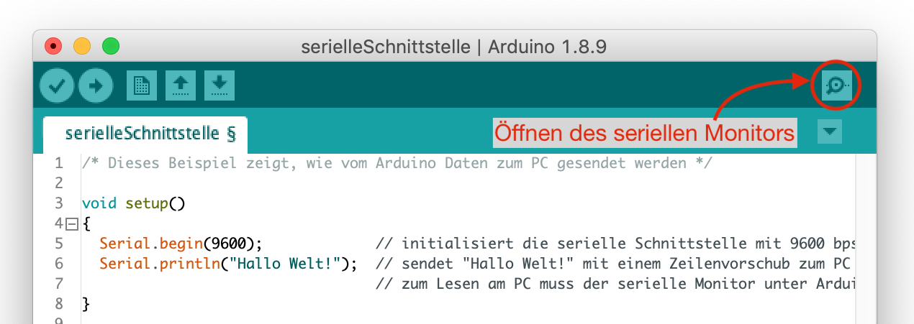

Debuggen mit der seriellen Schnittstellen
Bisher ist die Kommunikation mit dem Arduino relativ einseitig. Es wird ein Programm am PC geschrieben, auf den Arduino übertragen und anschließend leuchtet eine LED auf. Auf dem PC wird das Programm geschrieben, der Arduino führt es aus. Wenn das Programm funktioniert, die LEDs also wie gewünscht aufleuchten, ist alles gut. Sollte das Programm aber nicht auf Anhieb funktionieren (was leider meistens der Fall ist), wäre es wünschenswert, wenn uns der Arduino Informationen zum PC zurückschickt, damit wir untersuchen können, wo das Programm evtl. fehlerhaft ist.
Die serielle Schittstelle
Die serielle Schnittstelle ist eine Möglichkeit nach dem Hochladen des Programms mit dem Arduino zu kommunizieren. Sie ermöglicht es über den USB-Anschluss Daten vom Arduino zu empfangen, aber auch Daten zum Arduino zu senden. Hierbei bedeutet seriell, dass die Daten, ähnlich wie beim Morsen, nacheinander übertragen werden.
Auf den meisten Arduino-Boards befinden sich zwei mit RX und TX markierte LEDs. Diese LEDs zeigen an, ob mit der seriellen Schnittstelle gerade Daten empfangen (RX - receive) oder gesendet (TX - transmit) werden. Falls die serielle Schnittstelle mal nicht funktioniert, ist ein Blick auf die beiden LEDs immer ganz hilfreich. (Warum leuchten die RX und TX LEDs beim Hochladen des Programms?)
Einfaches Beispiel
In einem einfachen Beispiel soll der Arduino "Hallo Welt!" zum PC schicken, so dass es mit dem seriellen Monitor in der Arduino IDE gelesen werden kann.
/* Dieses Beispiel zeigt, wie vom Arduino Daten zum PC gesendet werden */
int zaehler;
void setup(){
Serial.begin(9600); // initialisieren der seriellen Schnittstelle
Serial.println("Das wird nur einmal ausgegeben.");
}
void loop(){
Serial.print("Zaehlerstand: "); // Text ohne Zeilenvorsprung schreiben
Serial.println(zaehler); // Wert der Variablen schreiben
}
Serieller Monitor
Öffnen Sie mit dem Lupensymbol oben rechts in der Arduino IDE den seriellen Monitor. Stellen Sie sicher, dass das im seriellen Monitor unten rechts die Baudrate 9600 eingestellt ist. Testen Sie das Programm auf Ihrem Arduino. 
Erläuterungen
Damit die serielle Schnittstelle benutzt werden kann, muss diese zuerst initialisiert werden:
Serial.begin(9600); // initialisiert die serielle Schnittstelle mit 9600 bps (Baud)
Im Gegensatz zu den anderen Befehlen die bisher verwendet wurden, wird hier dem eigentlichen Befehl begin(9600) durch einen Punkt getrennt das Word Serial voran gestellt. Hierbei handelt es sich um einen Methodenaufruf aus der Serial-Klasse. Als Argument wird dem Befehl Serial.begin(9600) die Übertragungsgeschwindigkeit in Baud (Symbolrate) angegeben. In diesem Fall entspricht 1 Baud genau 1 bit/s. Oft werwendete Datenraten sind 9600, 57600 oder 115200 bit/s. Die im Programm konfigurierte Baudrate muss auch im seriellen Monitor eingestellt werden!
Zum Senden von Daten stehen die Funktionen Serial.println() (mit Zeilenvorschub) und Serial.print() (ohne Zeilenvorschub) zur Verfügung. Mit print() und println() kann reiner Text (in Anführungszeichen: "Text")
Serial.print("Zaehlerstand: "); // Text ohne Zeilenvorsprung schreiben
oder aber auch der Wert von Variablen geschrieben werden.
Serial.println(zaehler); // Wert der Variablen schreiben
In der Arduino-Referenz (Link) werden weitere Befehle und Beispiele für die serielle Schnittstelle beschrieben.